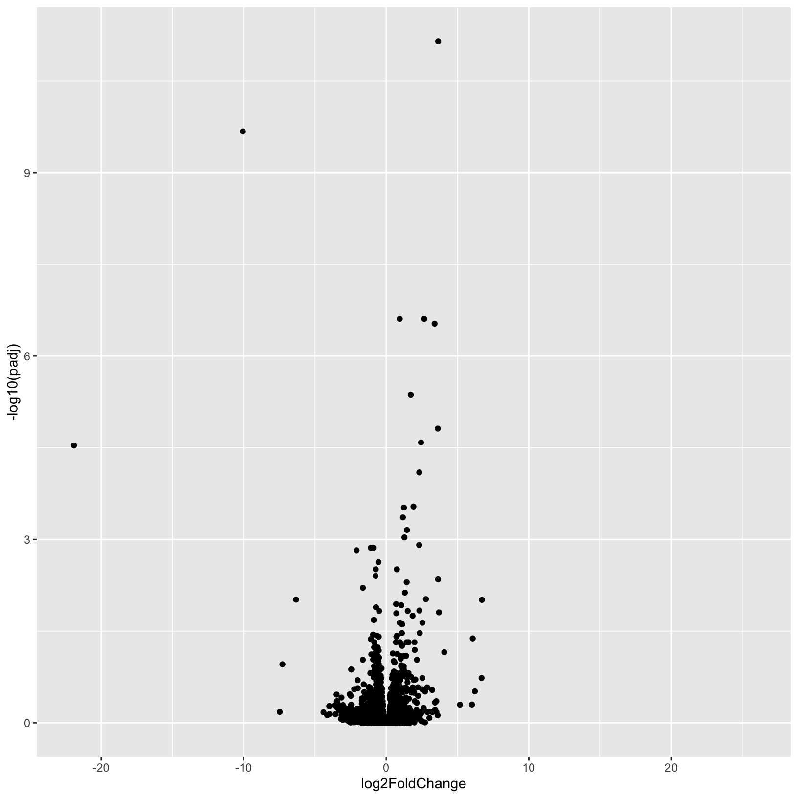
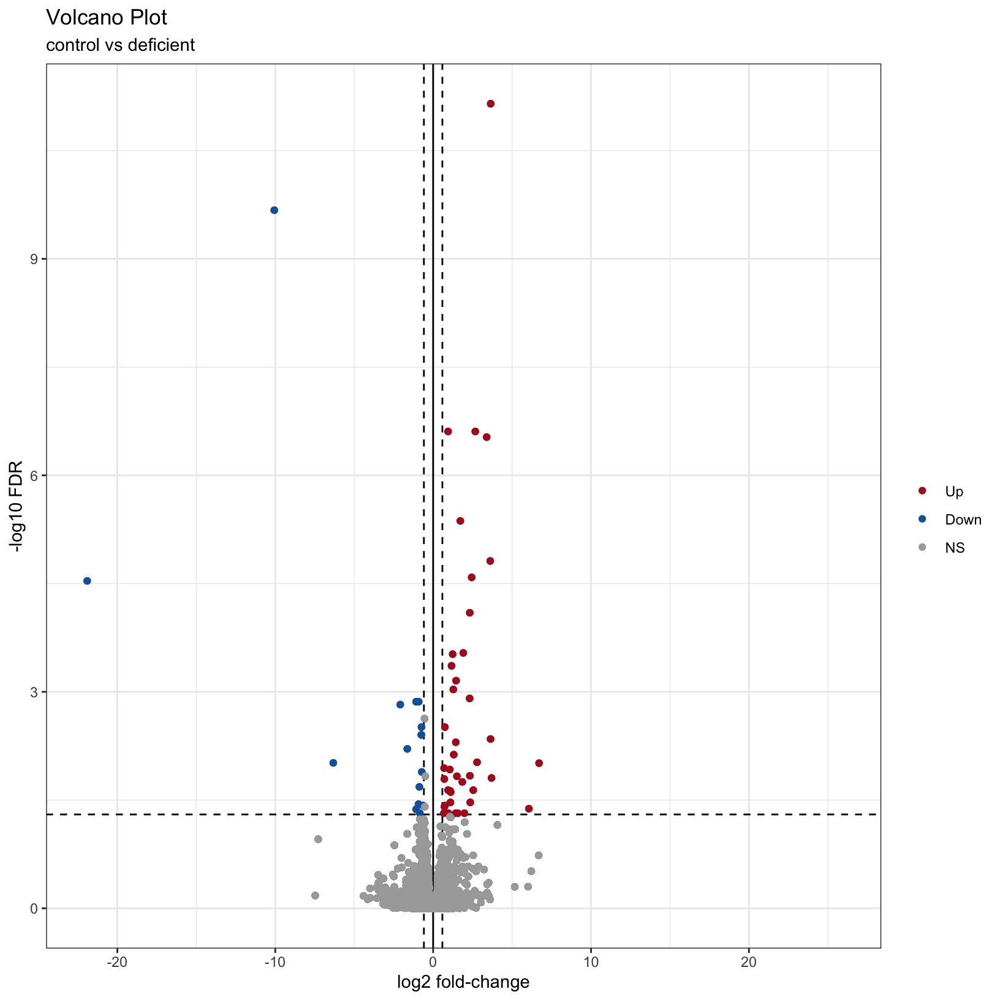

DE Visualization
UM Bioinformatics Core
2024-07-05
In this module, we will learn:
- How to generate common differential expression visualizations
- How to choose thresholds for calling differentially expressed genes
- Options for functional enrichments and other downstream analyses
Differential Expression Workflow
Here we will generate summary figures for our results and annotate our DE tables.

Summarizing DE results
Part of differential expression analysis is generating visualizations and summary tables to share our results. While the DESeq2 vignette provides examples of other visualizations, a common visualization to summarize DE comparisons are volcano plots.
Tabular DE summary
To generate a general summary of the DE results, we can use the
summary function to generate a basic summary by DESeq2.
summary(results_deficient_vs_control)
out of 16249 with nonzero total read count
adjusted p-value < 0.1
LFC > 0 (up) : 53, 0.33%
LFC < 0 (down) : 38, 0.23%
outliers [1] : 72, 0.44%
low counts [2] : 3781, 23%
(mean count < 7)
[1] see 'cooksCutoff' argument of ?results
[2] see 'independentFiltering' argument of ?resultsHowever, this summary is simply a text output that we are unable to manipulate. Moreover, notice that the thresholds are not quite as we would like them.
To create our own summary, we first need to choose thresholds. A standard threshold for the adjusted p-value is less than 0.05. A reasonable threshold for linear fold-change is less than -1.5 or greater than 1.5 (which corresponds to log2 fold-change -0.585 and 0.585, respectively). Including a fold-change threshold ensures that the DE genes have a reasonable effect size as well as statistical significance.
Let’s set these thresholds as variables to reuse. This is generally good practice because if you want to change those thresholds later then you only have to change them in one location of your script, which is faster and can reduce the risk of errors from missing some instances in your code.
fc = 1.5
fdr = 0.05Note: Choosing thresholds
Thresholding on adjusted p-values < 0.05 is a standard threshold, but depending on the research question and/or how the results will be used, other thresholds might be reasonable.
There is a nice Biostar post that discusses choosing adjusted p-value thresholds, including cases where a more relaxed threshold might be appropriate and (some heated) discussion of the dangers of adjusting the choosen threshold after running an analysis. Additionally, there is a Dalmon et al 2012 paper about p-value and fold-change thresholds for microarray data that may help provide some context.
If we think back to Computational Foundations, conditional statements could allow us to determine the number of genes that pass our thresholds, which would be useful for annotating our results tables and plots.
Exercise
How would we identify the number of genes with adjusted p-values < 0.05 and a fold-change above 1.5 (or below -1.5) in our comparison?
Solution
Here is one possible answer:
sum(results_deficient_vs_control$padj < fdr & abs(results_deficient_vs_control$log2FoldChange) >= log2(fc), na.rm = TRUE)[1] 56Checkpoint: If you see the same number of DE ganes with our choosen thresholds, please indicate with a green check. Otherwise use a red x.
Let’s now create a new column in
results_deficient_vs_control to record the significance
“call” based on these thresholds. And let’s separate the call by “Up” or
“Down”, noting that these are relative to our “Case” condition. There
are many ways to accomplish this, but the following will work:
First define all values as “NS” or “not significant”:
results_deficient_vs_control$call = 'NS'
head(results_deficient_vs_control)log2 fold change (MLE): condition deficient vs control
Wald test p-value: condition deficient vs control
DataFrame with 6 rows and 7 columns
baseMean log2FoldChange lfcSE stat pvalue padj
<numeric> <numeric> <numeric> <numeric> <numeric> <numeric>
ENSMUSG00000000001 1489.83039 0.297760 0.210310 1.415815 0.156830 0.868573
ENSMUSG00000000028 1748.93544 0.226421 0.176795 1.280695 0.200301 0.902900
ENSMUSG00000000031 2151.87715 0.457635 0.764579 0.598545 0.549476 0.995391
ENSMUSG00000000037 24.91672 0.579130 0.561259 1.031840 0.302147 0.950613
ENSMUSG00000000049 7.78377 -0.899483 1.553063 -0.579167 0.562476 0.998043
ENSMUSG00000000056 19653.54030 -0.174048 0.203529 -0.855151 0.392468 0.982479
call
<character>
ENSMUSG00000000001 NS
ENSMUSG00000000028 NS
ENSMUSG00000000031 NS
ENSMUSG00000000037 NS
ENSMUSG00000000049 NS
ENSMUSG00000000056 NSNext, determine the “Up” and “Down” indices:
up_idx = results_deficient_vs_control$padj < fdr & results_deficient_vs_control$log2FoldChange > log2(fc)
down_idx = results_deficient_vs_control$padj < fdr & results_deficient_vs_control$log2FoldChange < -log2(fc)Last, use those indices to assign the correct “Up” or “Down” values to the correct indices, and look at the head of the result:
results_deficient_vs_control$call[up_idx] = 'Up'
results_deficient_vs_control$call[down_idx] = 'Down'
head(results_deficient_vs_control)log2 fold change (MLE): condition deficient vs control
Wald test p-value: condition deficient vs control
DataFrame with 6 rows and 7 columns
baseMean log2FoldChange lfcSE stat pvalue padj
<numeric> <numeric> <numeric> <numeric> <numeric> <numeric>
ENSMUSG00000000001 1489.83039 0.297760 0.210310 1.415815 0.156830 0.868573
ENSMUSG00000000028 1748.93544 0.226421 0.176795 1.280695 0.200301 0.902900
ENSMUSG00000000031 2151.87715 0.457635 0.764579 0.598545 0.549476 0.995391
ENSMUSG00000000037 24.91672 0.579130 0.561259 1.031840 0.302147 0.950613
ENSMUSG00000000049 7.78377 -0.899483 1.553063 -0.579167 0.562476 0.998043
ENSMUSG00000000056 19653.54030 -0.174048 0.203529 -0.855151 0.392468 0.982479
call
<character>
ENSMUSG00000000001 NS
ENSMUSG00000000028 NS
ENSMUSG00000000031 NS
ENSMUSG00000000037 NS
ENSMUSG00000000049 NS
ENSMUSG00000000056 NSFinally, since plotting functions often require categorical
groupings, let’s make this call column a factor and specify
the level ordering:
results_deficient_vs_control$call = factor(results_deficient_vs_control$call, levels = c('Up', 'Down', 'NS'))
head(results_deficient_vs_control)log2 fold change (MLE): condition deficient vs control
Wald test p-value: condition deficient vs control
DataFrame with 6 rows and 7 columns
baseMean log2FoldChange lfcSE stat pvalue padj
<numeric> <numeric> <numeric> <numeric> <numeric> <numeric>
ENSMUSG00000000001 1489.83039 0.297760 0.210310 1.415815 0.156830 0.868573
ENSMUSG00000000028 1748.93544 0.226421 0.176795 1.280695 0.200301 0.902900
ENSMUSG00000000031 2151.87715 0.457635 0.764579 0.598545 0.549476 0.995391
ENSMUSG00000000037 24.91672 0.579130 0.561259 1.031840 0.302147 0.950613
ENSMUSG00000000049 7.78377 -0.899483 1.553063 -0.579167 0.562476 0.998043
ENSMUSG00000000056 19653.54030 -0.174048 0.203529 -0.855151 0.392468 0.982479
call
<factor>
ENSMUSG00000000001 NS
ENSMUSG00000000028 NS
ENSMUSG00000000031 NS
ENSMUSG00000000037 NS
ENSMUSG00000000049 NS
ENSMUSG00000000056 NSTip
It is often helpful to include code like this in differential expression analyses so there is a clearly labelled column that makes subsetting and summarizing the results easier.
Now we are in a position to quickly summarize our differential expression results:
table(results_deficient_vs_control$call)
Up Down NS
41 15 16193 We see quickly how many genes were “Up” in iron replete, how many were “Down” in iron replete, and how many were not significant.
Checkpoint: If you successfully added the
call column and got the same table result as above, please
indicate with a green check. Otherwise use a red x.
Visual DE summary
As described by the Galaxy project, a volcano plot is a type of scatterplot that shows statistical significance (adjusted p-value) versus effect size (fold change). In a volcano plot, the most upregulated genes are towards the right, the most downregulated genes are towards the left, and the most statistically significant genes are towards the top.
Let’s coerce the DataFrame which was returned by
DESeq2::results() into a tibble in
anticipation of using the ggplot2 library to plot. We’re
also going to modify our results table so that the row names become a
separate column, and so that it’s ordered by adjusted p-value.
# Use the rownames argument to create a new column of gene IDs
# Also arrange by adjusted p-value
results_forPlot = as_tibble(results_deficient_vs_control, rownames = 'id') %>% arrange(padj)Let’s start with a very simple volcano plot that plots the
log2FoldChange on the x-axis, and -log10(padj)
on the y-axis.
# Initialize the plot, specifying the plot type as 'geom_point'
ggplot(results_forPlot, aes(x = log2FoldChange, y = -log10(padj))) +
geom_point()Warning: Removed 3853 rows containing missing values or values outside the scale range
(`geom_point()`).
This is a good start, but it’s good practice to add better labels to
the plot with the labs() function:
# Add plot labels and change the theme - save the plot as object `p`
p = ggplot(results_forPlot, aes(x = log2FoldChange, y = -log10(padj))) +
geom_point() +
theme_bw() +
labs(
title = 'Volcano Plot',
subtitle = 'control vs deficient',
x = 'log2 fold-change',
y = '-log10 FDR'
)
pWarning: Removed 3853 rows containing missing values or values outside the scale range
(`geom_point()`).
What if we now added some visual guides to indicate where the
significant genes are? We can use the geom_vline() and
geom_hline() functions to accomplish this:
# Add threshold lines
p1 = p +
geom_vline(
xintercept = c(0, -log2(fc), log2(fc)),
linetype = c(1, 2, 2)) +
geom_hline(
yintercept = -log10(fdr),
linetype = 2)
p1Warning: Removed 3853 rows containing missing values or values outside the scale range
(`geom_point()`).
Finally, why not color the points by their significance status? We
already created the call column that has the correct
values. In this case we can get away with adding
geom_point() to our existing plot and specifying the
correct aesthetic:
p2 = p1 + geom_point(aes(color = call))
p2Warning: Removed 3853 rows containing missing values or values outside the scale range
(`geom_point()`).
Removed 3853 rows containing missing values or values outside the scale range
(`geom_point()`).
Finally, we can adjust our plot to have a nicer color scheme:
p3 = p2 + scale_color_manual(name = '', values=c('#B31B21', '#1465AC', 'darkgray'))
p3Warning: Removed 3853 rows containing missing values or values outside the scale range
(`geom_point()`).
Removed 3853 rows containing missing values or values outside the scale range
(`geom_point()`).
For additional visualizations for our DE results, we included some example code in the Bonus Content module and this HBC tutorial also includes some nice examples.
Subsetting significant genes
You may be interested in creating a table of only the genes that pass
your significance thresholds. A useful way to do this is to
conditionally subset your results. Again, we already created the
call column, which makes this relatively simple to do.
Note: The tidyverse functions you learned in Software Carpentry could also be alternatively used here.
# tidyr (requires table reformatting)
res_sig <- as_tibble(results_deficient_vs_control, rownames = "gene_ids") %>% filter(call != 'NS')
# base
res_sig <- results_deficient_vs_control[results_deficient_vs_control$call != 'NS', ]
head(res_sig)log2 fold change (MLE): condition deficient vs control
Wald test p-value: condition deficient vs control
DataFrame with 6 rows and 7 columns
baseMean log2FoldChange lfcSE stat pvalue padj
<numeric> <numeric> <numeric> <numeric> <numeric> <numeric>
ENSMUSG00000001281 532.398 1.110493 0.282999 3.92402 8.70820e-05 2.45334e-02
ENSMUSG00000004562 499.728 0.750326 0.197826 3.79286 1.48922e-04 3.76743e-02
ENSMUSG00000019916 352.536 1.305994 0.302853 4.31231 1.61561e-05 7.41746e-03
ENSMUSG00000020142 624.633 1.720608 0.287145 5.99212 2.07127e-09 4.27924e-06
ENSMUSG00000020176 3086.303 1.276265 0.262113 4.86914 1.12087e-06 9.26290e-04
ENSMUSG00000020272 1749.268 -0.640126 0.168531 -3.79827 1.45712e-04 3.76300e-02
call
<factor>
ENSMUSG00000001281 Up
ENSMUSG00000004562 Up
ENSMUSG00000019916 Up
ENSMUSG00000020142 Up
ENSMUSG00000020176 Up
ENSMUSG00000020272 Downdim(res_sig)[1] 56 7Summary
In this section, we:
- Generated a volcano plot for our differential expression results
- Summarized our differential expression results
- Discussed choosing thresholds
Sources
- HBC DGE training module, part 1: https://hbctraining.github.io/DGE_workshop/lessons/04_DGE_DESeq2_analysis.html
- HBC DGE training module, part 2: https://hbctraining.github.io/DGE_workshop/lessons/05_DGE_DESeq2_analysis2.html
- DESeq2 vignette: http://bioconductor.org/packages/devel/bioc/vignettes/DESeq2/inst/doc/DESeq2.html#differential-expression-analysis
These materials have been adapted and extended from materials listed above. These are open access materials distributed under the terms of the Creative Commons Attribution license (CC BY 4.0), which permits unrestricted use, distribution, and reproduction in any medium, provided the original author and source are credited.
| Previous lesson | Top of this lesson | Next lesson |
|---|